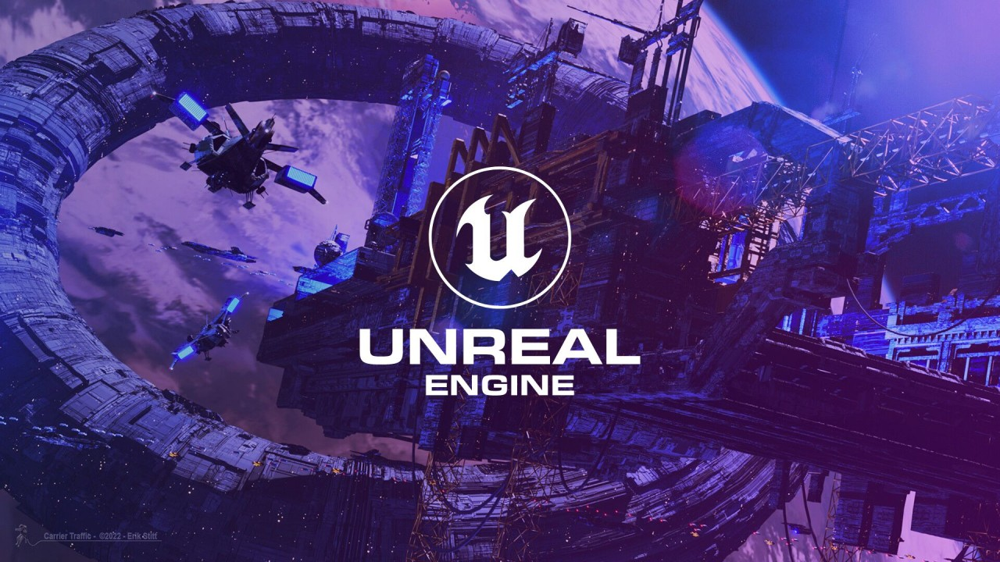
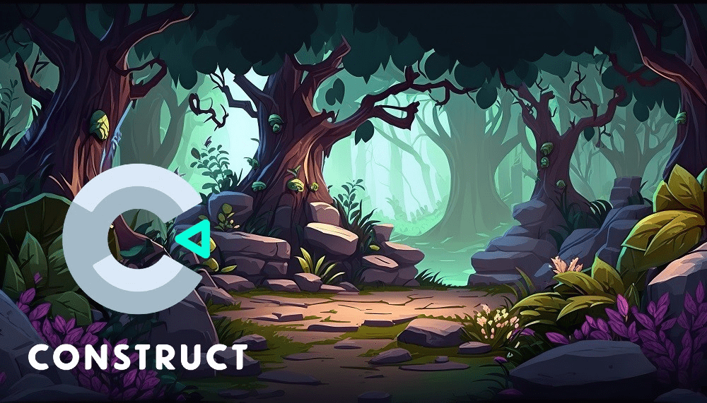

Artykuły
Zbior artykułów na tematy związane z tworzeniem gier.
Autor: Marta Kowalska
Data: 08 maja 2024
Kategoria: Podstawy tworzenia gier
Opis: Artykuł przedstawia przewodnik dla początkujących deweloperów gier.
Kategoria: Podstawy tworzenia gier
Opis: Artykuł przedstawia przewodnik dla początkujących deweloperów gier.
Jak Zacząć Tworzyć Gry: Przewodnik Dla Początkujących
Tworzenie gier to fascynujący proces, który łączy kreatywność, programowanie i sztukę. Niezależnie od tego, czy masz doświadczenie w programowaniu, czy dopiero zaczynasz swoją przygodę z tworzeniem gier, istnieje wiele sposobów, aby rozpocząć swoją podróż w świecie gamedevu. W tym artykule omówimy kilka kluczowych kroków, które pomogą Ci rozpocząć tworzenie własnych gier.
1. Wybierz Silnik Do Tworzenia Gier
Pierwszym krokiem w tworzeniu gier jest wybór odpowiedniego silnika do gier. Istnieje wiele popularnych silników, takich jak Unity, Unreal Engine, Godot Engine czy też Construct. Każdy z nich ma swoje zalety i wady, dlatego warto przetestować kilka z nich, aby zdecydować, który najlepiej odpowiada Twoim potrzebom i umiejętnościom.
Unity: Jest to jeden z najpopularniejszych silników do tworzenia gier, szczególnie jeśli chodzi o gry 3D. Posiada dużą społeczność oraz bogatą dokumentację, co ułatwia naukę.
Unreal Engine: Idealny dla osób, które chcą tworzyć zaawansowane gry 3D o wysokiej jakości grafice. Udostępnia wiele narzędzi do tworzenia realistycznych światów wirtualnych.

Godot Engine: Jest to silnik open-source, co oznacza, że jest darmowy do użytku komercyjnego. Posiada prosty interfejs, co czyni go przyjaznym dla początkujących.

Construct: Bardzo intuicyjny silnik, który pozwala tworzyć gry za pomocą drag-and-drop, bez konieczności programowania. Doskonały dla osób, które chcą szybko zacząć tworzyć proste gry.

2. Nauka Programowania i Grafiki
Choć niektóre silniki do gier umożliwiają tworzenie gier bez konieczności programowania, znajomość podstawowych koncepcji programowania z pewnością ułatwi Ci pracę i pozwoli na większą swobodę w tworzeniu. Znajomość języków takich jak C#, Python czy też języki skryptowe silników (np. Unreal Engine wykorzystuje język Blueprint) będzie bardzo pomocna.
Jeśli chodzi o grafikę, warto zaznajomić się z podstawami projektowania graficznego oraz animacji, aby móc tworzyć własne tekstury, modele 3D i animacje.
3. Dokształć Się i Eksperymentuj
Proces tworzenia gier to nieustanny proces nauki i doskonalenia. Wykorzystuj dostępne kursy, tutoriale, książki i dokumentacje, aby poszerzać swoją wiedzę i umiejętności. Eksperymentuj, testuj różne pomysły i nie obawiaj się popełniać błędów – to one są częścią procesu nauki.
4. Dołącz Do Społeczności
Jednym z największych atutów tworzenia gier jest silna społeczność, gotowa do pomocy i wsparcia. Dołącz do forów internetowych, grup na platformach społecznościowych, udzielaj się na portalach takich jak GitHub czy Stack Overflow. Dzielenie się wiedzą i doświadczeniem z innymi twórcami gier może być nieocenione.
Podsumowanie
Tworzenie gier to ekscytująca i satysfakcjonująca przygoda, która wymaga połączenia wielu umiejętności, determinacji i kreatywności. Niezależnie od tego, czy dopiero zaczynasz, czy już masz doświadczenie w programowaniu, istnieje wiele sposobów, aby rozpocząć swoją podróż w świecie gamedevu. Wybierz silnik, naucz się programować, eksperymentuj i dołącz do społeczności – a już niedługo będziesz mógł cieszyć się z własnych, stworzonych z pasją gier.